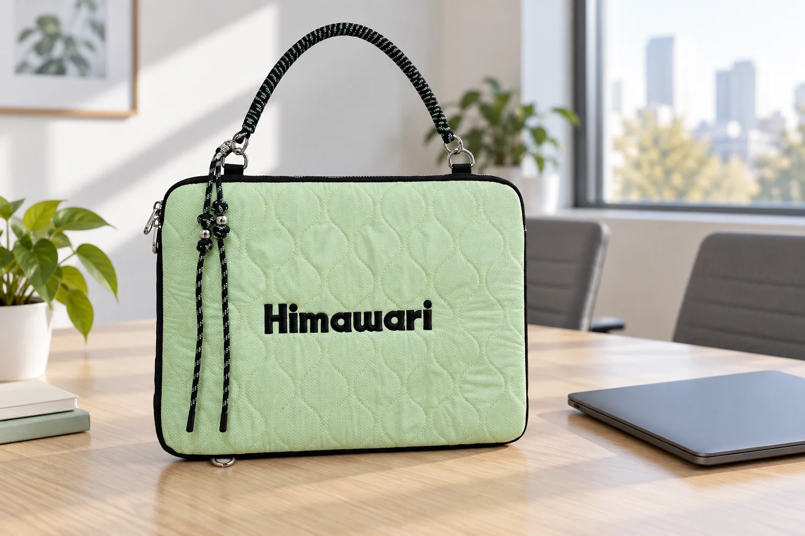

손잡이를 분리한 노트북 파우치, 다시 들기 전에

파우치를 다른 가방 안에 넣으면서 손잡이를 잠시 분리했다가, 회의실로 이동할 때 다시 연결할 수 있습니다. 지퍼를 닫았다고 바로 들기보다 손잡이 양 끝을 먼저 보세요. 사진에 참조한 No.2513 민트에는 연결 고리에 걸린 끈 형태의 손잡이가 보입니다. 분리형 연결부를 다시 사용할 때 어떤 순서로 살필지 정해두면 작은 고리도 지나치지 않게 됩니다.
파우치를 받친 상태에서 양쪽을 연결합니다
손잡이를 연결할 때는 파우치를 안정된 책상 위에 놓습니다. 노트북이 들어 있는 파우치를 한쪽 고리만으로 들어 올린 채 반대쪽을 끼우지 마세요. 손잡이 양 끝의 연결 장치를 각각 원래 고리에 걸고, 고리 밖에 걸쳐 있거나 끈이 연결부 사이에 끼지 않았는지 봅니다. 사진에 보이는 작은 금속 부품을 다른 위치에 임의로 걸어 사용하는 방식은 피합니다.
닫힌 것처럼 보여도 연결부를 가까이 봅니다
양쪽 연결 장치의 여닫는 부분이 제자리로 돌아왔는지 눈으로 확인합니다. 고리가 비틀려 있거나 연결부가 벌어져 보이면 바로 들지 말고 상태를 다시 살펴보세요. 손잡이 끈 자체도 한쪽이 꼬인 채 팽팽해지지 않도록 정리합니다. 연결 장치가 잘 닫히지 않거나 변형이 보인다면 억지로 눌러 맞추지 않고 제품 문의로 상태를 확인합니다.
두께가 얇은 파우치에 주변 물건을 더 밀어 넣지 않습니다
No.2513의 카탈로그 외부 크기는 가로 36.5 × 세로 28 × 폭 2cm입니다. 이 숫자를 노트북의 허용 두께나 손잡이가 버티는 무게로 해석할 수는 없습니다. 기기를 넣는 공간과 여밈은 실제 제품에서 확인하고, 마우스나 충전기를 노트북 위에 겹쳐 넣어 지퍼를 당기지 마세요. 별도 보호 기능이나 하중 수치는 이 글에서 확인한 자료에 없으므로 단정하지 않습니다.
이동을 마치면 손잡이와 지퍼 끈을 구분해 둡니다
파우치를 내려놓을 때는 바닥면을 받침 위에 먼저 놓고 손잡이를 놓습니다. 책상 모서리나 의자 부품에 연결 고리와 지퍼 끈이 걸리지 않았는지도 확인하세요. 손잡이를 다시 분리한다면 작은 연결 부품을 노트북 위에 던져두지 않고 손잡이와 함께 정한 자리에 둡니다. 다음 이동 때도 양쪽 연결부를 확인한 뒤 제품의 사용 안내에 맞춰 들면 됩니다.
참고·안내
- Himawari No.2513 제품 정보
- 실제 Himawari No.2513 민트 제품을 참조한 AI 연출입니다. 노트북은 별도 소품이며, 기기 수납이나 손잡이 하중을 시험한 사진이 아닙니다.
자주 묻는 질문
폭 2cm이면 두께 2cm의 노트북이 들어가나요?
카탈로그의 2cm는 제품 외부 폭입니다. 내부 공간이나 기기의 허용 두께를 뜻하지 않으므로 실제 기기 치수와 수납 공간을 별도로 확인해야 합니다.
연결 고리 하나가 잘 닫히지 않으면 어떻게 하나요?
한쪽만 연결해 들거나 임의로 구부려 맞추지 마세요. 문제가 보이는 연결부의 가까운 사진과 제품 정보를 준비해 문의하는 편이 좋습니다.